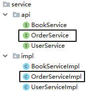

书城项目第五阶段¶
功能二 结账¶
1. 创建订单模型¶
1.1 物理建模¶
1.1.1 t_order表¶
CREATE TABLE t_order(
order_id INT PRIMARY KEY AUTO_INCREMENT,
order_sequence VARCHAR(200),
create_time VARCHAR(100),
total_count INT,
total_amount DOUBLE,
order_status INT,
user_id INT
);
| 字段名 | 字段作用 |
|---|---|
| order_id | 主键 |
| order_sequence | 订单号 |
| create_time | 订单创建时间 |
| total_count | 订单的总数量 |
| total_amount | 订单的总金额 |
| order_status | 订单的状态 |
| user_id | 下单的用户的id |
- 虽然order_sequence也是一个不重复的数值，但是不使用它作为主键。数据库表的主键要使用没有业务功能的字段来担任。
- 订单的状态
- 待支付（书城项目中暂不考虑）
- 已支付，待发货：0
- 已发货：1
- 确认收货：2
- 发起退款或退货（书城项目中暂不考虑）
- 用户id
- 从逻辑和表结构的角度来说，这其实是一个外键。
- 但是开发过程中建议先不要加外键约束：因为开发过程中数据尚不完整，加了外键约束开发过程中使用测试数据非常不方便，建议项目预发布时添加外键约束测试。
1.1.2 t_order_item表¶
CREATE TABLE t_order_item(
item_id INT PRIMARY KEY AUTO_INCREMENT,
book_name VARCHAR(20),
price DOUBLE,
img_path VARCHAR(50),
item_count INT,
item_amount DOUBLE,
order_id VARCHAR(20)
);
| 字段名称 | 字段作用 |
|---|---|
| item_id | 主键 |
| book_name | 书名 |
| price | 单价 |
| item_count | 当前订单项的数量 |
| item_amount | 当前订单项的金额 |
| order_id | 当前订单项关联的订单表的主键 |
说明：book_name、author、price这三个字段其实属于t_book表，我们把它们加入到t_order_item表中，其实并不符合数据库设计三大范式。这里做不符合规范的操作的原因是：将这几个字段加入当前表就不必在显示数据时和t_book表做关联查询，提高查询的效率，这是一种变通的做法。
1.2 逻辑模型¶
1.2.1 Order类¶
package com.atguigu.bean;
/**
* 包名:com.atguigu.bean
*
* @author Leevi
* 日期2021-05-19 09:16
*/
public class Order {
private Integer orderId;
private String orderSequence;
private String createTime;
private Integer totalCount;
private Double totalAmount;
private Integer orderStatus;
private Integer userId;
@Override
public String toString() {
return "Order{" +
"orderId=" + orderId +
", orderSequence='" + orderSequence + '\'' +
", createTime='" + createTime + '\'' +
", totalCount='" + totalCount + '\'' +
", totalAmount='" + totalAmount + '\'' +
", orderStatus=" + orderStatus +
", userId=" + userId +
'}';
}
public Order() {
}
public Order(Integer orderId, String orderSequence, String createTime, Integer totalCount, Double totalAmount, Integer orderStatus, Integer userId) {
this.orderId = orderId;
this.orderSequence = orderSequence;
this.createTime = createTime;
this.totalCount = totalCount;
this.totalAmount = totalAmount;
this.orderStatus = orderStatus;
this.userId = userId;
}
public Integer getOrderId() {
return orderId;
}
public void setOrderId(Integer orderId) {
this.orderId = orderId;
}
public String getOrderSequence() {
return orderSequence;
}
public void setOrderSequence(String orderSequence) {
this.orderSequence = orderSequence;
}
public String getCreateTime() {
return createTime;
}
public void setCreateTime(String createTime) {
this.createTime = createTime;
}
public Integer getTotalCount() {
return totalCount;
}
public void setTotalCount(Integer totalCount) {
this.totalCount = totalCount;
}
public Double getTotalAmount() {
return totalAmount;
}
public void setTotalAmount(Double totalAmount) {
this.totalAmount = totalAmount;
}
public Integer getOrderStatus() {
return orderStatus;
}
public void setOrderStatus(Integer orderStatus) {
this.orderStatus = orderStatus;
}
public Integer getUserId() {
return userId;
}
public void setUserId(Integer userId) {
this.userId = userId;
}
}
1.2.2 OrdrItem类¶
package com.atguigu.bean;
/**
* 包名:com.atguigu.bean
*
* @author Leevi
* 日期2021-05-19 10:13
*/
public class OrderItem {
private Integer itemId;
private String bookName;
private Double price;
private String imgPath;
private Integer itemCount;
private Double itemAmount;
private Integer orderId;
@Override
public String toString() {
return "OrderItem{" +
"itemId=" + itemId +
", bookName='" + bookName + '\'' +
", price=" + price +
", imgPath='" + imgPath + '\'' +
", itemCount=" + itemCount +
", itemAmount=" + itemAmount +
", orderId=" + orderId +
'}';
}
public OrderItem() {
}
public OrderItem(Integer itemId, String bookName, Double price, String imgPath, Integer itemCount, Double itemAmount, Integer orderId) {
this.itemId = itemId;
this.bookName = bookName;
this.price = price;
this.imgPath = imgPath;
this.itemCount = itemCount;
this.itemAmount = itemAmount;
this.orderId = orderId;
}
public Integer getItemId() {
return itemId;
}
public void setItemId(Integer itemId) {
this.itemId = itemId;
}
public String getBookName() {
return bookName;
}
public void setBookName(String bookName) {
this.bookName = bookName;
}
public Double getPrice() {
return price;
}
public void setPrice(Double price) {
this.price = price;
}
public String getImgPath() {
return imgPath;
}
public void setImgPath(String imgPath) {
this.imgPath = imgPath;
}
public Integer getItemCount() {
return itemCount;
}
public void setItemCount(Integer itemCount) {
this.itemCount = itemCount;
}
public Double getItemAmount() {
return itemAmount;
}
public void setItemAmount(Double itemAmount) {
this.itemAmount = itemAmount;
}
public Integer getOrderId() {
return orderId;
}
public void setOrderId(Integer orderId) {
this.orderId = orderId;
}
}
2. 创建组件¶
2.1 持久化层¶

2.2 业务逻辑层¶

2.3 表述层¶

3. 功能步骤¶
- 创建订单对象
- 给订单对象填充数据
- 生成订单号
- 生成订单的时间
- 从购物车迁移总数量和总金额
- 从已登录的User对象中获取userId并设置到订单对象中
- 将订单对象保存到数据库中
- 获取订单对象在数据库中自增主键的值
- 根据购物车中的CartItem集合逐个创建OrderItem对象
- 每个OrderItem对象对应的orderId属性都使用前面获取的订单数据的自增主键的值
- 把OrderItem对象的集合保存到数据库
- 每一个item对应的图书增加销量、减少库存
- 清空购物车
4. 案例思路¶

5. 代码实现¶
5.1 购物车页面结账超链接¶
cart.html
<a class="pay" href="protected/orderClient?method=checkout">去结账</a>
5.2 OrderClientServlet.checkout()¶
package com.atguigu.servlet.model;
import com.atguigu.bean.Cart;
import com.atguigu.bean.User;
import com.atguigu.constant.BookStoreConstants;
import com.atguigu.service.OrderService;
import com.atguigu.service.impl.OrderServiceImpl;
import com.atguigu.servlet.base.ModelBaseServlet;
import javax.servlet.http.HttpServletRequest;
import javax.servlet.http.HttpServletResponse;
import javax.servlet.http.HttpSession;
/**
* @author Leevi
* 日期2021-05-19 09:05
*/
public class OrderClientServlet extends ModelBaseServlet {
private OrderService orderService = new OrderServiceImpl();
/**
* 结算
* @param request
* @param response
*/
public void checkout(HttpServletRequest request, HttpServletResponse response) throws Exception {
try {
//1. 从session中获取购物车信息
HttpSession session = request.getSession();
Cart cart = (Cart) session.getAttribute(BookStoreConstants.CARTSESSIONKEY);
//2. 从session中获取用户信息
User loginUser = (User) session.getAttribute(BookStoreConstants.USERSESSIONKEY);
//3. 调用业务层的方法进行订单结算，获取订单号
String orderSequence = orderService.checkout(loginUser, cart);
//4. 清空购物车
session.removeAttribute(BookStoreConstants.CARTSESSIONKEY);
//5. 将订单号存储到请求域中,然后跳转到checkout.html
request.setAttribute("orderSequence",orderSequence);
} catch (Exception e) {
e.printStackTrace();
throw new RuntimeException(e.getMessage());
}finally {
processTemplate("cart/checkout",request,response);
}
}
}
5.3 BaseDao.batchUpdate()¶
/**
* 批处理方法
* @param sql
* @param paramArr
* @return
*/
public int[] batchUpdate(String sql,Object[][] paramArr){
Connection conn = JDBCUtil.getConnection();
try {
return queryRunner.batch(conn,sql,paramArr);
} catch (SQLException e) {
e.printStackTrace();
throw new RuntimeException(e.getMessage());
}finnaly{
JDBCUtil.releaseConnection(conn);
}
}
5.4 OrderService.checkout()¶
package com.atguigu.service.impl;
import com.atguigu.bean.Cart;
import com.atguigu.bean.CartItem;
import com.atguigu.bean.Order;
import com.atguigu.bean.User;
import com.atguigu.constant.BookStoreConstants;
import com.atguigu.dao.BookDao;
import com.atguigu.dao.OrderDao;
import com.atguigu.dao.OrderItemDao;
import com.atguigu.dao.impl.BookDaoImpl;
import com.atguigu.dao.impl.OrderDaoImpl;
import com.atguigu.dao.impl.OrderItemDaoImpl;
import com.atguigu.service.OrderService;
import java.text.DateFormat;
import java.text.SimpleDateFormat;
import java.util.*;
/**
* 包名:com.atguigu.service.impl
*
* @author Leevi
* 日期2021-05-19 09:12
*/
public class OrderServiceImpl implements OrderService {
private OrderDao orderDao = new OrderDaoImpl();
private OrderItemDao orderItemDao = new OrderItemDaoImpl();
private BookDao bookDao = new BookDaoImpl();
@Override
public String checkout(User user, Cart cart) throws Exception {
//1. 往订单表中插入一条数据
Order order = new Order();
//1.1 生成一个唯一的订单号:方式一、使用UUID;方式二、使用当前毫秒数拼接用户id
//UUID是java提供的一个生成唯一字符串的工具类
String orderSequence = UUID.randomUUID().toString();
order.setOrderSequence(orderSequence);
//1.2 创建当前时间的字符串，存入到order中
DateFormat dateFormat = new SimpleDateFormat("yyyy-MM-dd HH:mm:ss");
String createTime = dateFormat.format(new Date());
order.setCreateTime(createTime);
//1.3 设置订单的totalCount,其实就是cart的totalCount
order.setTotalCount(cart.getTotalCount());
//1.4 设置订单的totalAmount,其实就是cart的totalAmount
order.setTotalAmount(cart.getTotalAmount());
//1.5 设置订单状态: 0表示已支付未发货、1表示已发货、2表示已收货
order.setOrderStatus(BookStoreConstants.UNFILLEDORDER);
//1.6 设置订单的用户id
order.setUserId(user.getUserId());
//1.7 调用持久层的方法保存order
orderDao.insertOrder(order);
//2. 往订单详情表中插入多条订单详情(批处理)
//获取购物车中的所有购物项所在的map
Map<Integer, CartItem> cartItemMap = cart.getCartItemMap();
//获取map的所有值：就是所有的购物项
Collection<CartItem> cartItemCollection = cartItemMap.values();
//将Collection封装到List,集合中存储的就是所有购物项
List<CartItem> cartItemList = new ArrayList<>(cartItemCollection);
// 使用二维数组封装批处理需要的数据:一维表示要执行的数据条数，二维表示sql语句的参数个数
//要执行的数据条数，就是要添加的订单项的个数，就是购物车中购物项的个数
Object[][] insertOrderItemParamArr = new Object[cartItemList.size()][6];
//3. 批量修改书的库存和销量
//封装批量修改书的库存和销量的参数
Object[][] updateBookParamArr = new Object[cartItemList.size()][3];
for (int i = 0; i < cartItemList.size(); i++) {
//获取到遍历出来的购物项
CartItem cartItem = cartItemList.get(i);
//封装批量添加订单项的参数
//封装sql语句中的第一个参数book_name的值，就是cartItem的bookName
insertOrderItemParamArr[i][0] = cartItem.getBookName();
//就是cartItem的price
insertOrderItemParamArr[i][1] = cartItem.getPrice();
//就是cartItem的imgPath
insertOrderItemParamArr[i][2] = cartItem.getImgPath();
//就是cartItem的count
insertOrderItemParamArr[i][3] = cartItem.getCount();
//就是cartItem的amount
insertOrderItemParamArr[i][4] = cartItem.getAmount();
//orderId就是订单的id,就是第一步获取的自增长的主键值
insertOrderItemParamArr[i][5] = order.getOrderId();
//封装批量修改t_book的库存和销量的参数
//要增加的销量，其实就是购物项的count
updateBookParamArr[i][0] = cartItem.getCount();
//要减少的库存，其实也是购物项的count
updateBookParamArr[i][1] = cartItem.getCount();
//要修改的数的id，其实就是购物项的bookId
updateBookParamArr[i][2] = cartItem.getBookId();
}
//调用持久层orderItemDao的方法，进行批量添加订单项
orderItemDao.insertOrderItemArr(insertOrderItemParamArr);
//调用持久层的方法，进行批量修改书的销量和库存
bookDao.updateBookArr(updateBookParamArr);
//功能执行完毕没有出现异常，提交事务
//4. 返回订单的序列号
return orderSequence;
}
}
5.5 orderDao.insertOrder(order)¶
package com.atguigu.dao.impl;
import com.atguigu.bean.Order;
import com.atguigu.dao.BaseDao;
import com.atguigu.dao.OrderDao;
import com.atguigu.utils.JDBCUtil;
import java.sql.Connection;
import java.sql.PreparedStatement;
import java.sql.ResultSet;
import java.sql.SQLException;
/**
* 包名:com.atguigu.dao.impl
*
* @author Leevi
* 日期2021-05-19 09:12
*/
public class OrderDaoImpl extends BaseDao<Order> implements OrderDao {
@Override
public void insertOrder(Order order) throws Exception{
ResultSet resultSet = null;
Connection conn = null;
try {
//往t_order表中插入一条订单信息
//使用DBUtils没法获取自增长的主键值，所以我们只能使用原始的JDBC执行SQL语句，获取自增长的主键
String sql = "insert into t_order (order_sequence,create_time,total_count,total_amount,order_status,user_id) values (?,?,?,?,?,?)";
conn = JDBCUtil.getConnection();
//预编译，并且指定获取自增长主键
PreparedStatement preparedStatement = conn.prepareStatement(sql, PreparedStatement.RETURN_GENERATED_KEYS);
//设置参数
preparedStatement.setObject(1, order.getOrderSequence());
preparedStatement.setObject(2, order.getCreateTime());
preparedStatement.setObject(3, order.getTotalCount());
preparedStatement.setObject(4, order.getTotalAmount());
preparedStatement.setObject(5, order.getOrderStatus());
preparedStatement.setObject(6, order.getUserId());
//执行sql语句
preparedStatement.executeUpdate();
//获取自增长主键值
resultSet = preparedStatement.getGeneratedKeys();
if (resultSet.next()) {
int orderId = resultSet.getInt(1);
//将orderId存入到order对象中
order.setOrderId(orderId);
}
} catch (SQLException e) {
e.printStackTrace();
throw new RuntimeException(e.getMessage());
}
}
}
5.6 orderItemDao.insertOrderItemArr(insertOrderItemParamArr)¶
package com.atguigu.dao.impl;
import com.atguigu.bean.OrderItem;
import com.atguigu.dao.BaseDao;
import com.atguigu.dao.OrderItemDao;
/**
* 包名:com.atguigu.dao.impl
*
* @author Leevi
* 日期2021-05-19 10:13
*/
public class OrderItemDaoImpl extends BaseDao<OrderItem> implements OrderItemDao {
@Override
public void insertOrderItemArr(Object[][] insertOrderItemParamArr) throws Exception{
String sql = "insert into t_order_item (book_name,price,img_path,item_count,item_amount,order_id) values (?,?,?,?,?,?)";
batchUpdate(sql,insertOrderItemParamArr);
}
}
5.7 bookDao.updateBookArr(updateBookParamArr)¶
@Override
public void updateBookArr(Object[][] updateBookParamArr) throws Exception {
String sql = "update t_book set sales=sales+?,stock=stock-? where book_id=?";
batchUpdate(sql,updateBookParamArr);
}
功能三 结账过程中使用事务¶
1. 事务回顾¶
1.1 ACID属性¶
-
A：原子性 事务中包含的数据库操作缺一不可，整个事务是不可再分的。
-
C：一致性 事务执行之前，数据库中的数据整体是正确的；事务执行之后，数据库中的数据整体仍然是正确的。
- 事务执行成功：提交（commit）
-
事务执行失败：回滚（rollback）
-
I：隔离性 数据库系统同时执行很多事务时，各个事务之间基于不同隔离级别能够在一定程度上做到互不干扰。简单说就是：事务在并发执行过程中彼此隔离。
-
D：持久性 事务一旦提交，就永久保存到数据库中，不可撤销。
1.2 隔离级别¶
1.2.1 并发问题¶
| 并发问题 | 问题描述 |
|---|---|
| 脏读 | 当前事务读取了其他事务尚未提交的修改 如果那个事务回滚，那么当前事务读取到的修改就是错误的数据 |
| 不可重复读 | 当前事务中多次读取到的数据不一致(数据行数一致，但是行中的具体内容不一致) |
| 幻读 | 当前事务中多次读取到的数据行数不一致 |
1.2.2 隔离级别¶
| 隔离级别 | 描述 | 能解决的并发问题 |
|---|---|---|
| 读未提交 | 允许当前事务读取其他事务尚未提交的修改 | 啥问题也解决不了 |
| 读已提交 | 允许当前事务读取其他事务已经提交的修改 | 脏读 |
| 可重复读 | 当前事务执行时锁定当前记录，不允许其他事务操作 | 脏读、不可重复读 |
| 串行化 | 当前事务执行时锁定当前表，不允许其他事务操作 | 脏读、不可重复读、幻读 |
2. JDBC事务控制¶
2.1 同一个数据库连接¶
只有当多次数据库操作是使用的同一个连接的时候，才能够保证这几次数据库操作在同一个事务中执行

2.2 关闭事务的自动提交¶
connection.setAutoCommit(false);
2.3 提交事务¶
connection.commit();
2.4 回滚事务¶
connection.rollBack();
2.5 事务整体的代码块¶
try{
// 关闭事务的自动提交
connection.setAutoCommit(false);
// 事务中包含的所有数据库操作
// 提交事务
connection.commit();
}catch(Excetion e){
// 回滚事务
connection.rollBack();
}finally{
// 释放数据库连接
connection.close();
}
3. 将事务对接到书城项目中¶
3.1 三层架构中事务要对接的位置¶
从逻辑上来说，一个事务对应一个业务方法（Service层的一个方法）。

3.2 假想¶
每一个Service方法内部，都套用了事务操作所需要的try...catch...finally块。
3.3 假想代码的缺陷¶
- 会出现大量的冗余代码：我们希望能够抽取出来，只写一次
- 对核心业务功能是一种干扰：我们希望能够在编写业务逻辑代码时专注于业务本身，而不必为辅助性质的套路代码分心
- 将持久化层对数据库的操作写入业务逻辑层，是对业务逻辑层的一种污染，导致持久化层和业务逻辑层耦合在一起
3.4 事务代码抽取¶
- 只要是Filter拦截到的请求都会从doFilter()方法经过
- chain.doFilter(req, resp);可以包裹住将来要执行的所有方法
- 事务操作的try...catch...finally块只要把chain.doFilter(req, resp)包住，就能够包住将来要执行的所有方法
3.5 编写一个TransactionFilter来统一处理事务¶
package com.atguigu.filter;
import com.atguigu.utils.JDBCUtil;
import javax.servlet.*;
import java.io.IOException;
import java.sql.Connection;
import java.sql.SQLException;
/**
* @author Leevi
* 日期2021-05-19 14:34
*/
public class TransactionFilter implements Filter {
@Override
public void destroy() {
}
@Override
public void doFilter(ServletRequest req, ServletResponse resp, FilterChain chain) throws ServletException, IOException {
Connection conn = null;
try {
//开启事务
conn = JDBCUtil.getConnection();
conn.setAutoCommit(false);
chain.doFilter(req, resp);
//提交事务
conn.commit();
} catch (Exception e) {
e.printStackTrace();
try {
conn.rollback();
} catch (SQLException ex) {
ex.printStackTrace();
}
throw new RuntimeException(e.getMessage());
}finally {
try {
conn.setAutoCommit(true);
} catch (SQLException e) {
e.printStackTrace();
}
}
}
@Override
public void init(FilterConfig config) throws ServletException {
}
}
3.6 配置TransactionFilter指定其拦截要进行事务控制的请求¶
<filter>
<filter-name>TransactionFilter</filter-name>
<filter-class>com.atguigu.filter.TransactionFilter</filter-class>
</filter>
<filter-mapping>
<filter-name>TransactionFilter</filter-name>
<!--
哪些请求要使用TransactionFilter做事务控制，这里就配置哪些请求的地址
-->
<url-pattern>/protected/orderClient</url-pattern>
</filter-mapping>
3.7 保证所有数据库操作使用同一个连接¶
『重要发现』：在书城项目中所有执行SQL语句的代码都是通过JDBCUtils.getConnection()方法获取数据库连接。所以我们可以通过重构JDBCUtils.getConnection()方法实现：所有数据库操作使用同一个连接。

3.6.1 从数据源中只拿出一个¶
为了保证各个需要Connection对象的地方使用的都是同一个对象，我们从数据源中只获取一个Connection。不是说整个项目只用一个Connection，而是说调用JDBCUtils.getConnection()方法时，只使用一个。所以落实到代码上就是：每次调用getConnection()方法时先检查是否已经拿过了，拿过就给旧的，没拿过给新的。
3.6.2 公共区域¶
为了保证各个方法中需要Connection对象时都能拿到同一个对象，需要做到：将唯一的对象存入一个大家都能接触到的地方。

结论：使用线程本地化技术实现Connection对象从上到下传递。
3.7 线程本地化¶
3.7.1 确认同一个线程¶
在从Filter、Servlet、Service一直到Dao运行的过程中，我们始终都没有做类似new Thread().start()这样开启新线程的操作，所以整个过程在同一个线程中。
3.7.2 一条小河¶

3.7.3 一个线程¶

3.7.4 ThreadLocal的API¶
-
set(T t)方法：在当前线程中，往ThreadLocal对象中存入一个数据
-
get()方法：在当前线程中，从ThreadLocal对象中取出数据
- remove()方法: 移除ThreadLocal中保存的当前线程的数据
3.7.5 结论¶
TheadLocal的基本结论: 一个ThreadLocal对象，在一个线程中只能存储一个数据，在该线程的任何地方调用get()方法获取到的都是同一个数据
4. 代码实现¶
4.1 重构JDBCUtils类¶
- 要点1：将ThreadLocal对象声明为静态成员变量
- 要点2：重构获取数据库连接的方法
- 要点3：重构释放数据库连接的方法
package com.atguigu.utils;
import com.alibaba.druid.pool.DruidDataSourceFactory;
import javax.sql.DataSource;
import java.io.InputStream;
import java.sql.Connection;
import java.util.Properties;
/**
* 包名:com.atguigu.jdbc.utils
*
* @author Leevi
* 日期2021-04-29 15:15
* 这个工具类中会提供仨方法:
* 1. 获取连接池对象
* 2. 从连接池中获取连接
* 3. 将链接归还到连接池
*/
public class JDBCUtil {
private static DataSource dataSource;
private static ThreadLocal<Connection> connectionThreadLocal = new ThreadLocal<>();
static {
try {
//1. 使用类加载器读取配置文件，转成字节输入流
InputStream is = JDBCUtil.class.getClassLoader().getResourceAsStream("druid.properties");
//2. 使用Properties对象加载字节输入流
Properties properties = new Properties();
properties.load(is);
//3. 使用DruidDataSourceFactory创建连接池对象
dataSource = DruidDataSourceFactory.createDataSource(properties);
} catch (Exception e) {
e.printStackTrace();
}
}
/**
* 获取连接池对象
* @return
*/
public static DataSource getDataSource(){
return dataSource;
}
/**
* 获取连接,让它在同一个线程中调用的时候拿到的是同一个连接
* @return
*/
public static Connection getConnection() {
try {
Connection conn = connectionThreadLocal.get();
if (conn == null) {
//说明ThreadLocal中还没有数据
//那么就从连接池中获取一个连接
conn = dataSource.getConnection();
//将这个连接存储到ThreadLocal
connectionThreadLocal.set(conn);
}
return conn;
} catch (Exception e) {
e.printStackTrace();
throw new RuntimeException(e.getMessage());
}
}
public static void releaseConnection(){
try {
//将链接归还回连接池
getConnection().close();
//从ThreadLocal中移除连接
connectionThreadLocal.remove();
} catch (Exception e) {
e.printStackTrace();
throw new RuntimeException(e.getMessage());
}
}
}
4.2 重构BaseDao¶
- 要点：去除释放数据库连接的操作（转移到过滤器中）
package com.atguigu.dao;
import com.atguigu.utils.JDBCUtil;
import org.apache.commons.dbutils.QueryRunner;
import org.apache.commons.dbutils.handlers.BeanHandler;
import org.apache.commons.dbutils.handlers.BeanListHandler;
import java.sql.Connection;
import java.sql.SQLException;
import java.util.List;
/**
* 包名:com.atguigu.dao
*
* @author Leevi
* 日期2021-05-12 11:00
*/
public class BaseDao<T> {
private QueryRunner queryRunner = new QueryRunner();
/**
* 批处理方法
* @param sql
* @param paramArr
* @return
*/
public int[] batchUpdate(String sql,Object[][] paramArr){
Connection conn = JDBCUtil.getConnection();
try {
return queryRunner.batch(conn,sql,paramArr);
} catch (SQLException e) {
e.printStackTrace();
throw new RuntimeException(e.getMessage());
}
}
/**
* 执行增删改的sql语句
* @param sql
* @param params
* @return
*/
public int update(String sql,Object... params){
Connection conn = JDBCUtil.getConnection();
try {
//执行增删改的sql语句，返回受到影响的行数
return queryRunner.update(conn,sql,params);
} catch (SQLException e) {
e.printStackTrace();
throw new RuntimeException(e.getMessage());
}
}
/**
* 执行查询一行数据的sql语句，将结果集封装到JavaBean对象中
* @param clazz
* @param sql
* @param params
* @return
*/
public T getBean(Class<T> clazz,String sql,Object... params){
Connection conn = JDBCUtil.getConnection();
try {
return queryRunner.query(conn,sql,new BeanHandler<>(clazz),params);
} catch (SQLException e) {
e.printStackTrace();
throw new RuntimeException(e.getMessage());
}
}
/**
* 执行查询多行数据的sql语句，并且将结果集封装到List<JavaBean>
* @param clazz
* @param sql
* @param params
* @return
*/
public List<T> getBeanList(Class<T> clazz, String sql, Object... params){
Connection conn = JDBCUtil.getConnection();
try {
return queryRunner.query(conn,sql,new BeanListHandler<>(clazz),params);
} catch (SQLException e) {
e.printStackTrace();
throw new RuntimeException(e.getMessage());
}
}
}
注意：OrderDao中insertOrder()方法也要去掉关闭数据库连接的操作。
@Override
public void insertOrder(Order order) throws Exception{
ResultSet resultSet = null;
Connection conn = null;
try {
//往t_order表中插入一条订单信息
//使用DBUtils没法获取自增长的主键值，所以我们只能使用原始的JDBC执行SQL语句，获取自增长的主键
String sql = "insert into t_order (order_sequence,create_time,total_count,total_amount,order_status,user_id) values (?,?,?,?,?,?)";
conn = JDBCUtil.getConnection();
//预编译，并且指定获取自增长主键
PreparedStatement preparedStatement = conn.prepareStatement(sql, PreparedStatement.RETURN_GENERATED_KEYS);
//设置参数
preparedStatement.setObject(1, order.getOrderSequence());
preparedStatement.setObject(2, order.getCreateTime());
preparedStatement.setObject(3, order.getTotalCount());
preparedStatement.setObject(4, order.getTotalAmount());
preparedStatement.setObject(5, order.getOrderStatus());
preparedStatement.setObject(6, order.getUserId());
//执行sql语句
preparedStatement.executeUpdate();
//获取自增长主键值
resultSet = preparedStatement.getGeneratedKeys();
if (resultSet.next()) {
int orderId = resultSet.getInt(1);
//将orderId存入到order对象中
order.setOrderId(orderId);
}
} catch (SQLException e) {
e.printStackTrace();
throw new RuntimeException(e.getMessage());
}
}
4.3 创建CloseConnectionFilter用于统一关闭连接¶
<!--注意:这个过滤器要配置在TransactionFilter之前-->
<filter>
<filter-name>CloseConnectionFilter</filter-name>
<filter-class>com.atguigu.filter.CloseConnectionFilter</filter-class>
</filter>
<filter-mapping>
<!--
哪些请求需要关闭连接，则在这里配置哪些请求的路径
-->
<filter-name>CloseConnectionFilter</filter-name>
<url-pattern>/bookManager</url-pattern>
<url-pattern>/protected/orderClient</url-pattern>
<url-pattern>/index.html</url-pattern>
<url-pattern>/user</url-pattern>
</filter-mapping>
Java代码如下：
package com.atguigu.filter;
import com.atguigu.utils.JDBCUtil;
import javax.servlet.*;
import java.io.IOException;
/**
* @author Leevi
* 日期2021-05-19 14:12
*/
public class CloseConnectionFilter implements Filter {
@Override
public void destroy() {
}
@Override
public void doFilter(ServletRequest req, ServletResponse resp, FilterChain chain) throws ServletException, IOException {
try {
chain.doFilter(req, resp);
} catch (Exception e) {
e.printStackTrace();
}finally {
JDBCUtil.releaseConnection();
}
}
@Override
public void init(FilterConfig config) throws ServletException {
}
}
4.4 项目异常处理的原则¶
- 所有的Dao和Service的方法都抛最大的异常
- 在Servlet中对异常进行try......catch，在catch中做相应的处理(例如跳转到错误页面)，如果当前方法需要事务控制，那么一定要在catch中throw new RuntimeException(e.getMessage());
- 在ModelBaseServlet的catch块里面throw new RuntimeException(e.getMessage())
本文总阅读量次